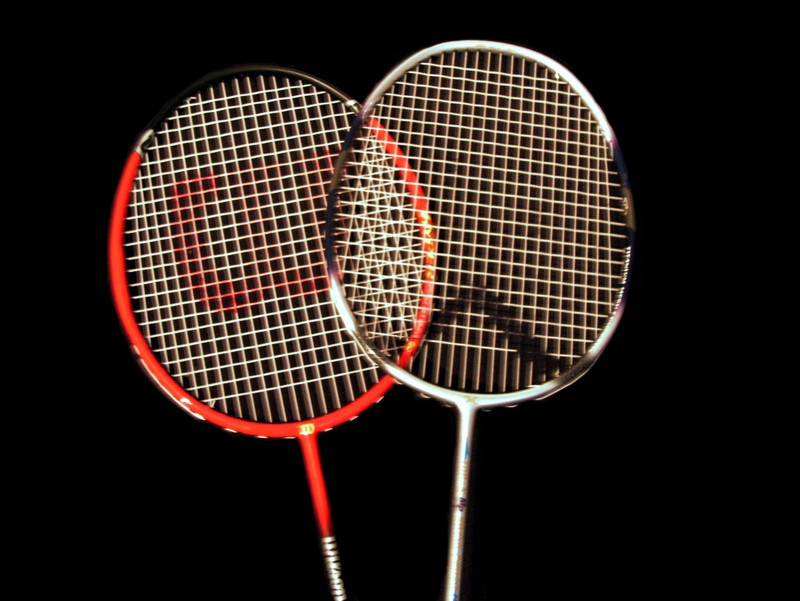
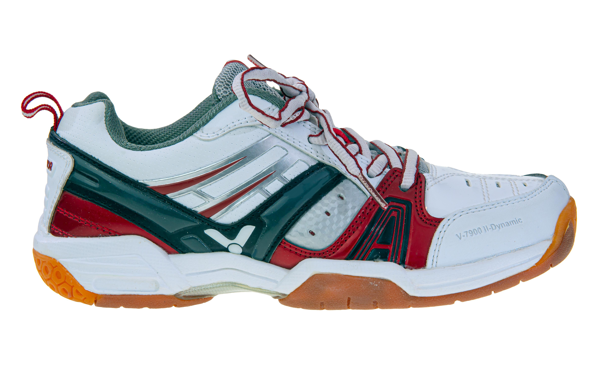
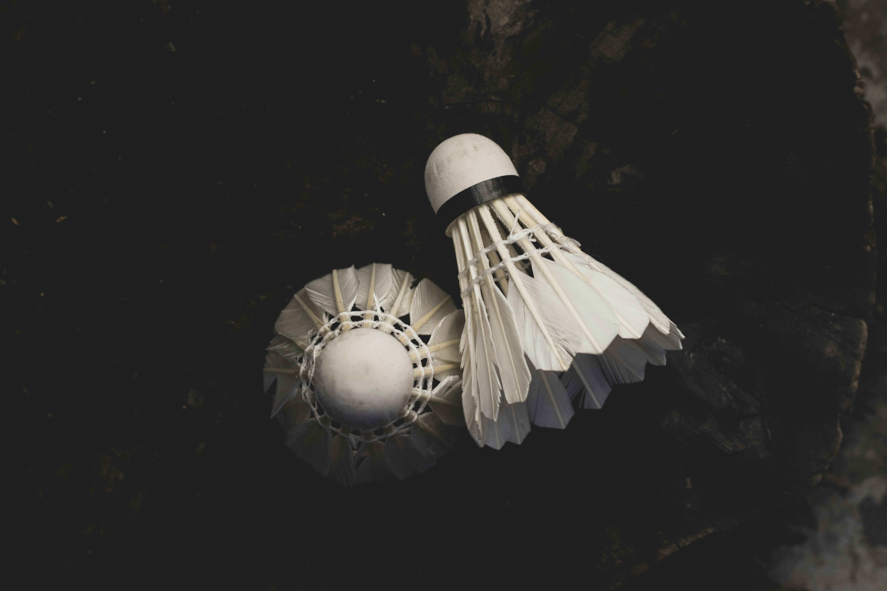

Oikeilla varusteilla voit parantaa lyöntivoimaa, liikkumista ja pelimukavuutta merkittävästi. Tältä sivulta löydät tietoa mailoista, kengistä sekä sulista

Sulkapallomaila on pelaajan tärkein varuste. Mailoja on erilaisia riippuen pelityylistä ja taitotasosta. Kevyet mailat sopivat nopeaan puolustuspeliin, kun taas painavammat mailat tuottavat enemmän voimaa hyökkäyksiin.
Hyökkäävät mailat ovat usein hieman painavampia kärjestä. Ne auttavat tekemään voimakkaita smash-lyöntejä ja sopivat aggressiiviseen pelityyliin.
Puolustavat mailat ovat kevyempiä ja nopeampia käsitellä. Ne sopivat erityisesti nopeisiin palautuksiin ja verkkopeliin.

Sulkapallossa liikutaan nopeasti joka suuntaan. Tavalliset juoksukengät eivät tarjoa tarpeeksi sivuttaistukea, minkä vuoksi oikeat sulkapallokengät ovat erittäin tärkeät.

Sulkapallossa käytetään yleisimmin höyhensulkia ja muovisulkia. Valinta vaikuttaa pelin tuntumaan, lentorataan ja kestävyyteen.
Höyhensulat tarjoavat tarkan lentoradan ja hyvän kontrollin, minkä vuoksi kilpailupelaajat suosivat niitä. Ne kuluvat kuitenkin nopeammin.
Muovisulat kestävät pidempään ja sopivat hyvin harjoitteluun sekä harrastepelaajille. Ne ovat edullisempia, mutta eivät lennä yhtä luonnollisesti kuin höyhensulat.
Aloittelijan kannattaa käyttää kevyttä ja helposti hallittavaa mailaa. Liian jäykkä tai painava maila voi vaikeuttaa pelaamista. Pallojen vallinnassa kannattaa suosia muovisulkia, sillä ne kestävät pidempään ja sopivat hyvin harjoitteluun.